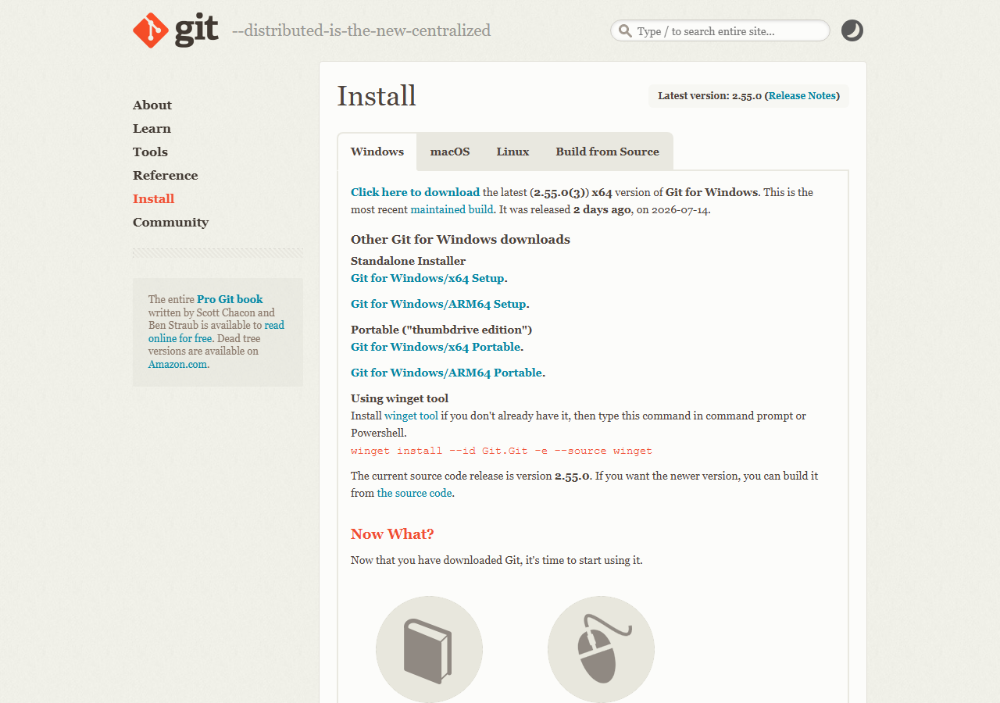

Технический блок позади — теперь к главному. Сегодня создаём первый сайт в разделе Code. Никакого знания HTML, CSS или JavaScript не нужно. Всё, что потребуется — правильно сформулировать задачу.
В Claude есть два режима работы. Chat — разговорный: задали вопрос, получили ответ. Code — инструментальный: Claude видит файлы на вашем компьютере, создаёт их, запускает, исправляет ошибки.
Для создания сайта нужен именно Code. Причина проста: сайт — это файлы. Чтобы Claude сделал что-то настоящее, он должен видеть папку с проектом, создавать внутри неё файлы и проверять результат.
Git — программа-помощник, которая нужна Claude Code для работы с папками. Без неё Claude сможет смотреть на файлы, но не сможет создавать проекты. Устанавливается один раз.
Зайдите на git-scm.com → Download → нажмите кнопку под вашу систему (Windows или Mac). Запустите установщик, везде нажимайте «Next» — настройки по умолчанию подходят.

Откройте Terminal и введите git --version. Если git не установлен, Mac сам предложит установить Developer Tools — нажмите «Install».
git --version и нажмите Enter. Если в ответ появилась версия — всё готово. Если нет — установка не завершена, повторите.Прежде чем начать — создайте папку специально для проекта. Не сохраняйте сайт в Загрузки, не кидайте на Рабочий стол среди других файлов. Выделенная папка — это порядок в проекте и быстрый поиск файлов в будущем.
Придумайте говорящее название, например my-landing или сайт-психолога. Латиница без пробелов — надёжнее.
В Code нажмите кнопку «Открыть папку» (или «Open folder») → выберите только что созданную папку. Или перетащите папку прямо в окно Code.
Code покажет диалог безопасности — нажмите «Trust», чтобы разрешить Claude работать с файлами внутри папки. Без этого разрешения он не сможет ничего создать.
Хороший промпт — это не одно предложение. Это короткое техзадание из шести частей. Не нужно писать роман — достаточно нескольких слов на каждый пункт.
| Что Claude создаёт | Почему это важно |
|---|---|
| Структуру страниц | Шапка, секции, футер — всё в правильном порядке |
| Тексты-заглушки | Не пустые блоки, а заполненные примеры — сразу видно, как будет смотреться |
| Кнопки и якорные ссылки | Навигация по секциям работает сразу |
| CSS-анимации | Плавное появление блоков при прокрутке без JS-библиотек |
| Адаптив | Сайт корректно отображается на телефоне без отдельной задачи |
| Заглушки для фото | Цветные прямоугольники с подсказками, что сюда поставить |
«Тёмный фон, золотой акцент, немного пространства между блоками, без лишних украшений» — этого достаточно. Claude понимает описания стиля без технических деталей.
Сделайте скриншот понравившегося сайта → вставьте картинку в чат вместе с промптом → добавьте «сделай в похожем стиле». Claude умеет «читать» визуальный стиль.
Напишите «выбери дизайн сам — что-то современное, профессиональное». Удивительно, но это работает хорошо: Claude часто предлагает интересные решения, когда ему дают свободу.
Скопируйте фото в папку проекта → в промпте напишите «замени заглушку фото на файл photo.jpg». Claude найдёт файл по имени.
Зайдите на unsplash.com → найдите подходящее фото → скопируйте адрес изображения (ПКМ → «Копировать адрес изображения») → передайте Claude.
«Подбери несколько релевантных фото с Unsplash для секции о команде» — Claude сам сформирует ссылки на подходящие изображения.
Сайт в папке видите только вы. Чтобы отправить ссылку — нужен хостинг. Netlify — бесплатный сервис с простейшим drag & drop интерфейсом. Подробная пошаговая инструкция — в следующем уроке 4.1.
| Настройка | Когда использовать |
|---|---|
| Sonnet + Medium | Первые черновики, правки текстов, простые задачи — 80% работы |
| Sonnet + High | Сложная верстка, нестандартные анимации, создание полноценного дизайна |
| Opus + High | Финальная полировка крупного проекта — используйте редко, это «тяжёлая артиллерия» |
git --version возвращает версию